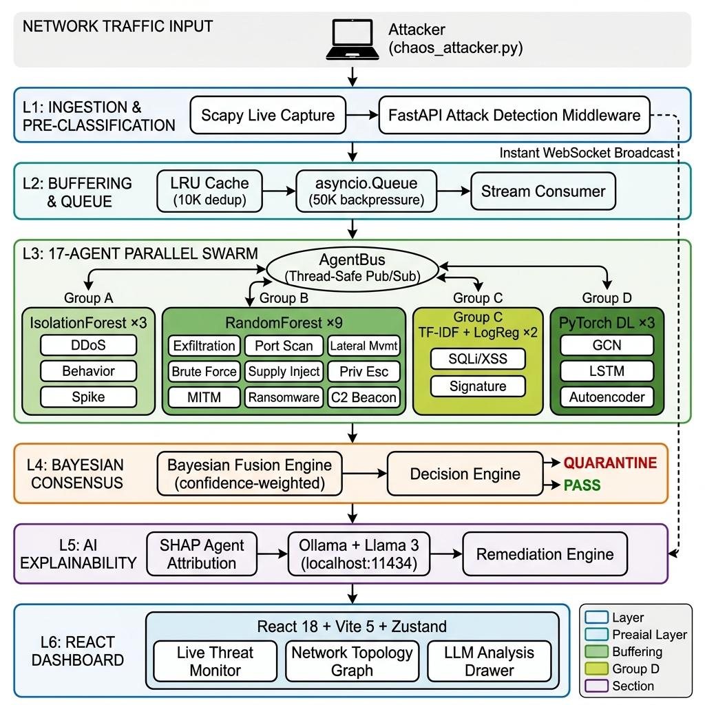

AMRITA
VISHWA VIDYAPEETHAM
School of Computing
Coimbatore Campus, Tamil Nadu
Email: harishraj@amrita.edu
GRASP: GRAPH-BASED REAL-TIME AGENTIC SECURITY PLATFORM
PROJECT FEEDBACK

School of Computing
Coimbatore Campus, Tamil Nadu
Email: harishraj@amrita.edu

live_capture.py (Scapy),
AttackDetectionMiddleware (FastAPI), asyncio.Queue.agent_orchestrator, 14 CPU ML agents, 3 GPU
Deep Learning models (GCN, LSTM, Autoencoder).remediation_engine.py, local Llama
3 (via Ollama) on localhost:11434, SHAP feature extraction.The GRASP hybrid architecture effectively addresses the challenge of balancing high-volume ingestion and deep-context analysis in network security. The 17-agent swarm ensures robust detection, and the integrated local LLM provides necessary human-interpretable explanations and automated response. The Bayesian decision-making process offers a superior probability-driven consensus mechanism. Overall, GRASP demonstrates practical feasibility for real-time monitoring and defense of complex, critical networks (e.g., medical supply chains) using zero-touch, self-contained AI.